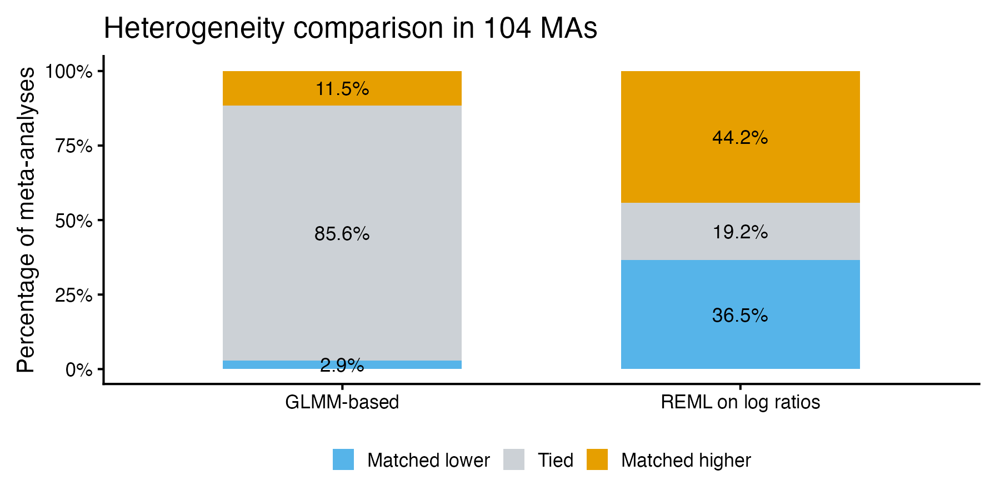
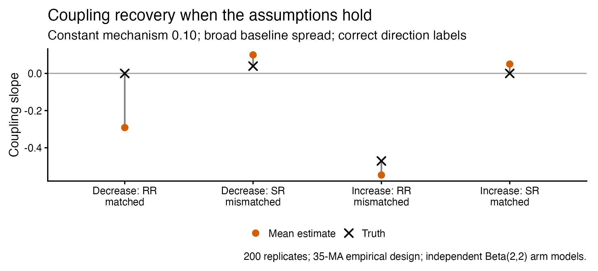
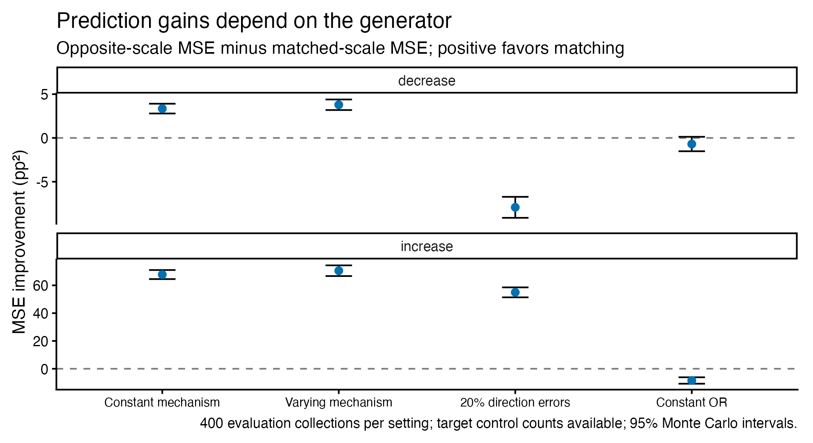
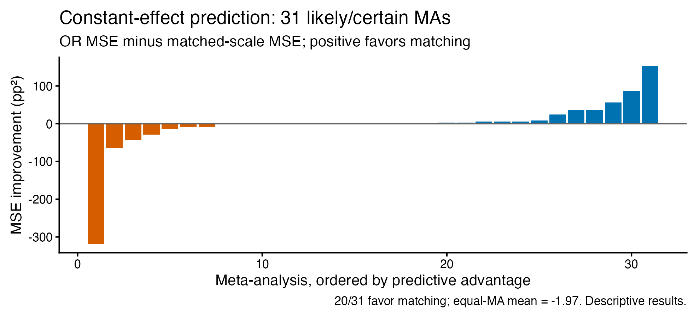

Effect measure stability: analysis draft
Department of Data Science Methods, Julius Center, University Medical Center Utrecht
Why this discussion?
- We are stuck: several analyses, mixed findings, and a potentially negative empirical result.
- Some difficulties concern the estimators; others may concern the scientific assumptions or the available data.
- We want to turn this work into a coherent paper, with a clear question and an honest account of what we learned.
Today: which findings belong in that paper, and what still needs resolving?
Three empirical questions
Under monotonicity and constant mechanism strength, the direction-matched scale is stable across baseline risks.
| Heterogeneity |
Is between-trial variation smaller on the matched scale? |
| Coupling |
Is the matched effect less associated with baseline risk? |
| Prediction |
Does matching improve prediction of another trial? |
Matched = RR for an expected decrease in \(P(Y=1)\); SR for an expected increase.
Heterogeneity: analysis
Observed data
- Fit each MA on both RR and SR scales; compare between-trial heterogeneity.
- Classical analyses: paired comparisons and a second-stage mixed model with MA and review random intercepts.
- Bayesian extensions: per-MA fits followed by an across-MA model, or a joint single-stage hierarchy.
\[
\theta_m=\log(\tau_{m,\mathrm{matched}})
-\log(\tau_{m,\mathrm{mismatched}}).
\]
Negative values favor the matched scale.
Implementation and dependence
Heterogeneity: what we learned
Observed data · paired comparison

Many estimates are tied at zero; the answer is sensitive to the estimator.
The early simulation assessed the paired test under a stylized design—not the entire analysis pipeline.
Baseline coupling: a more direct target
Let \(\alpha=\operatorname{logit}(p_C)\) and \(\beta=\log(\mathrm{RR})\) or \(\log(\mathrm{SR})\).
\[
\kappa_m=\frac{\operatorname{Cov}_m(\alpha,\beta)}
{\operatorname{Var}_m(\alpha)}.
\]
| Decrease |
\(0\) |
positive |
| Increase |
negative |
\(0\) |
Classical regression uses observed control rates; Bayesian approaches estimate latent probabilities and their coupling.
Difficulty: control data enter both the baseline estimate and the effect estimate.
Coupling: can we recover the known truth?
Simulation · independent-binomial estimator

For the matched decrease/RR slope: truth 0, mean estimate −0.291, nominal 95% interval coverage 0/200.
Prediction: does scale choice help?
Source trials in an MA → fit RR, SR or OR model
Held-out control data → estimate the target baseline
Predict held-out treated outcome → score after prediction
\[
\Delta L=L_{\mathrm{comparator}}-L_{\mathrm{matched}}.
\]
- Positive values favor matching, on a common treated-probability scale.
- Average held-out losses within MA, then weight MAs equally.
- Separate random-effects prediction from the later constant-effect curve analysis.
Random-effects prediction: simulation
Simulation · exact-binomial RR/SR/OR models

Random-effects prediction: observed data
Observed data · 35 MAs, 361 held-out trials
| Opposite scale |
+14.95 |
| OR |
+2.29 |
Units: squared percentage points; positive favors matching.
- Descriptive mean errors favor matching, but the comparison depends on direction and loss function.
- Average-performance intervals were not adequately calibrated across simulation settings.
- These results do not establish predictive superiority or identify a causal mechanism.
Prediction methods and calibration
Constant-effect curves: fit and prediction
Observed data · later profile-likelihood analysis

No demonstrated average advantage over OR; the predictive interval failed its sample-size-specific calibration gate.
Strict constant-directional fit flagged 10/31 likely/certain and 16/60 unlikely MAs after nominal BH correction.
What would make a coherent paper?
Candidate question: does expected treatment direction help choose an effect scale for evidence synthesis?
- Empirical assessment: heterogeneity and prediction results are mixed; selection and uncertainty matter.
- Methodological finding: intuitive coupling diagnostics can fail even when the generating assumptions hold.
- Possible contribution: explain when scale matching helps, when estimation obscures it, and what these data cannot establish.
Discussion: which endpoint should lead—and what minimum additional work would make the conclusion defensible?
Implementation and dependence
| Classical paired tests |
RR/SR paired within MA |
| Second-stage heterogeneity mixed model |
MA and review random intercepts |
| Bayesian heterogeneity notebooks |
Across-MA hierarchy; no explicit review/shared-trial effect |
| Later coupling/prediction samples |
One MA per review; exclude repeated corrected trial IDs |
Review effects do not encode the exact covariance from shared trials across reviews.
Back to heterogeneity
Coupling variants and their status
| Shared-binomial v2 |
91-MA empirical fit; development simulations |
Strict diagnostic failure; incomplete recovery checks |
| Independent arms |
Large simulation panels; label/information variations |
Biased slopes and poor coverage |
| Corrected moments / Fieller |
Small development panels |
Undefined points or unbounded intervals |
| Within-MA pooling |
60 collections each at 35 and 350 MAs |
Only 14/60 and 3/60 passed original diagnostics |
Back to coupling
Prediction methods and calibration
| Early feasibility benchmark |
Transport mean log effect to known target baseline; no new-trial random effect |
| October random-effects models |
New target effect plus baseline uncertainty; RR/SR/OR |
| November constant-effect curves |
Common-effect point fit; baseline uncertainty; separate bootstrap fit test |
The later simulations evaluate different procedures; they do not validate the earlier ones retrospectively.
Back to prediction
Analysis populations
| Descriptive canonical export |
1,291 |
| At least five distinct RCTs |
389 |
| Certain/likely monotonic, at least five RCTs |
65 |
| Same, known direction |
54 |
| October prediction: selected independent MAs |
35 |
| November curves: selected likely/certain MAs |
31 |
Different versions use different selection rules and samples; these are not interchangeable denominators.
Back to discussion